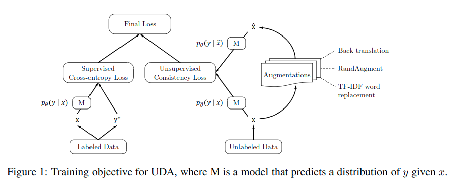
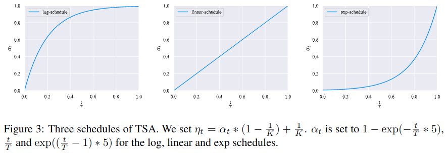
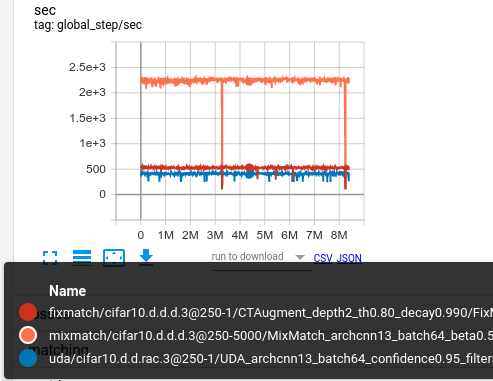

半监督学习：Unsupervised Data Augmentation
深度学习
第八个算法UNSUPERVISED DATA AUGMENTATION FOR CONSISTENCY TRAINING。此算法与VAT的想法类似，都是通过加强扰动的质量来获得更好的一致性正则化。
算法理论
我们研究了扰动添加在一致性训练中的作用，并发现先进的数据增强方法不仅在监督学习中效果好，在非监督学习中表现也十分出色，因此提出用一系列高质量的数据增强方法加强一致性训练，此方法命名为UDA。
主要贡献为如下：
- 我们证明了有监督学习中发现的最新数据增强也可以作为半监督学习的噪声来源。
UDA可以匹配或超过更多数量级的纯有监督学习UDA还可以和bert结合
Unsupervised Data Augmentation (UDA)
半监督一致性训练流程如下：

对于图像数据，UDA使用的是RandAugment方法，来自于Randaugment: Practical data aug-mentation with no separate search。

低数据区域训练退火
在半监督学习中，经常遇到一种情况，即未标记数据量和已标记数据量存在巨大差距。然后模型通常会快速拟合有限的已标记数据，而不足以拟合未标记数据。为了解决这个问题，提出了一种训练信号退火TSA的方法，随着训练会逐渐释放带标签的样本的信号，就是在模型对于样本的置信度低于阈值\(\eta_{t}\)的时候情况下，才使用带标签的样本，如果模型对于正确类别的预测概率高于阈值，那么要从损失函数中删除这个样本，这就是为了防止出现过度训练。
对于\(\eta_{t}\)的变化曲线，设计了三种模式，对于标签训练数据较小时容易过拟合可以使用exp曲线，对于标签训练数据较多时可以使用log曲线。

代码
这个文章的论文里面讲的理论太少了，但是代码量实际不少。
TSA_MODES = 'no exp linear log'.split()
def tsa_threshold(self, tsa, scale=5, tsa_pos=10, **kwargs):
""" 训练信号退火阈值计算函数 """
del kwargs
# step ratio will be maxed at (2 ** 14) * (2 ** 10) ~ 16.8M updates
step_ratio = tf.to_float(self.step) / tf.to_float(min(FLAGS.train_kimg, 1 << 14) << tsa_pos)
if tsa == 'linear':
coeff = step_ratio
elif tsa == 'exp': # [exp(-5), exp(0)] = [1e-2, 1]
coeff = tf.exp((step_ratio - 1) * scale)
elif tsa == 'log': # [1 - exp(0), 1 - exp(-5)] = [0, 0.99]
coeff = 1 - tf.exp((-step_ratio) * scale)
elif tsa == 'no':
coeff = tf.to_float(1.0)
elif tsa != 'no':
raise NotImplementedError(tsa)
coeff = tf.math.minimum(coeff, 1.0) # bound the coefficient
p_min = 1. / self.nclass
return coeff * (1 - p_min) + p_min
def tsa_loss_mask(self, tsa, logits, labels, tsa_pos, **kwargs):
""" 滤置信度高于训练信号退火阈值的对应样本损失 """
thresh = self.tsa_threshold(tsa, tsa_pos=tsa_pos, **kwargs)
p_class = tf.nn.softmax(logits, axis=-1)
p_correct = tf.reduce_sum(labels * p_class, axis=-1)
loss_mask = tf.cast(p_correct <= thresh, tf.float32) # Ignore confident predictions.
return tf.stop_gradient(loss_mask)
@staticmethod
def confidence_based_masking(logits, p_class=None, thresh=0.9):
if logits is not None:
p_class = tf.nn.softmax(logits, axis=-1)
p_class_max = tf.reduce_max(p_class, axis=-1)
loss_mask = tf.cast(p_class_max >= thresh, tf.float32) # Ignore unconfident predictions.
return tf.stop_gradient(loss_mask)
@staticmethod
def softmax_temperature_controlling(logits, T):
# this is essentially the same as sharpening in mixmatch
logits = logits / T
return tf.stop_gradient(logits)
@staticmethod
def kl_divergence_from_logits(p_logits, q_logits):
p = tf.nn.softmax(p_logits)
log_p = tf.nn.log_softmax(p_logits)
log_q = tf.nn.log_softmax(q_logits)
kl = tf.reduce_sum(p * (log_p - log_q), -1)
return kl
@staticmethod
def entropy_from_logits(logits):
log_prob = tf.nn.log_softmax(logits, axis=-1)
prob = tf.exp(log_prob)
ent = tf.reduce_sum(-prob * log_prob, axis=-1)
return ent
def train(self, train_nimg, report_nimg):
if FLAGS.eval_ckpt:
self.eval_checkpoint(FLAGS.eval_ckpt)
return
batch = FLAGS.batch
train_labeled = self.dataset.train_labeled.repeat().shuffle(FLAGS.shuffle).parse().augment()
train_labeled = train_labeled.batch(batch).prefetch(16).make_one_shot_iterator().get_next()
train_unlabeled = self.dataset.train_unlabeled.repeat().shuffle(FLAGS.shuffle).parse().augment()
train_unlabeled = train_unlabeled.batch(batch * self.params['uratio']).prefetch(16)
train_unlabeled = train_unlabeled.make_one_shot_iterator().get_next()
scaffold = tf.train.Scaffold(saver=tf.train.Saver(max_to_keep=FLAGS.keep_ckpt,
pad_step_number=10))
with tf.Session(config=utils.get_config()) as sess:
self.session = sess
self.cache_eval()
with tf.train.MonitoredTrainingSession(
scaffold=scaffold,
checkpoint_dir=self.checkpoint_dir,
config=utils.get_config(),
save_checkpoint_steps=FLAGS.save_kimg << 10,
save_summaries_steps=report_nimg - batch) as train_session:
self.session = train_session._tf_sess()
gen_labeled = self.gen_labeled_fn(train_labeled)
gen_unlabeled = self.gen_unlabeled_fn(train_unlabeled)
self.tmp.step = self.session.run(self.step)
while self.tmp.step < train_nimg:
loop = trange(self.tmp.step % report_nimg, report_nimg, batch,
leave=False, unit='img', unit_scale=batch,
desc='Epoch %d/%d' % (1 + (self.tmp.step // report_nimg), train_nimg // report_nimg))
for _ in loop:
self.train_step(train_session, gen_labeled, gen_unlabeled)
while self.tmp.print_queue:
loop.write(self.tmp.print_queue.pop(0))
while self.tmp.print_queue:
print(self.tmp.print_queue.pop(0))
def model(self, batch, lr, wd, wu, we, confidence, uratio,
temperature=1.0, tsa='no', tsa_pos=10, ema=0.999, **kwargs):
hwc = [self.dataset.height, self.dataset.width, self.dataset.colors]
xt_in = tf.placeholder(tf.float32, [batch] + hwc, 'xt') # For training
x_in = tf.placeholder(tf.float32, [None] + hwc, 'x')
y_in = tf.placeholder(tf.float32, [batch * uratio, 2] + hwc, 'y')
l_in = tf.placeholder(tf.int32, [batch], 'labels')
l = tf.one_hot(l_in, self.nclass)
lrate = tf.clip_by_value(tf.to_float(self.step) / (FLAGS.train_kimg << 10), 0, 1)
lr *= tf.cos(lrate * (7 * np.pi) / (2 * 8))
tf.summary.scalar('monitors/lr', lr)
# Compute logits for xt_in and y_in
classifier = lambda x, **kw: self.classifier(x, **kw, **kwargs).logits
skip_ops = tf.get_collection(tf.GraphKeys.UPDATE_OPS)
# 这个是多gpu平行前向传播
logits = utils.para_cat(lambda x: classifier(x, training=True), tf.concat([xt_in, y_in[:, 0], y_in[:, 1]], 0))
post_ops = [v for v in tf.get_collection(tf.GraphKeys.UPDATE_OPS) if v not in skip_ops]
# 分离出前向传播的结果
logits_x = logits[:batch]
logits_weak, logits_strong = tf.split(logits[batch:], 2)
del logits, skip_ops
# 锐化 softmax temperature control，和mixmatch中的锐化基本相同
logits_weak_tgt = self.softmax_temperature_controlling(logits_weak, T=temperature)
# 对于锐化后的无监督信号也根据置信度mask
pseudo_labels = tf.stop_gradient(tf.nn.softmax(logits_weak))
pseudo_mask = self.confidence_based_masking(logits=None, p_class=pseudo_labels, thresh=confidence)
tf.summary.scalar('monitors/mask', tf.reduce_mean(pseudo_mask))
tf.summary.scalar('monitors/conf_weak', tf.reduce_mean(tf.reduce_max(tf.nn.softmax(logits_weak), axis=1)))
tf.summary.scalar('monitors/conf_strong', tf.reduce_mean(tf.reduce_max(tf.nn.softmax(logits_strong), axis=1)))
# 锐化后的分布与未锐化的分布计算一致性损失
kld = self.kl_divergence_from_logits(logits_weak_tgt, logits_strong)
# 计算logits_weak的熵
entropy = self.entropy_from_logits(logits_weak)
# 对一致性损失进行mask
loss_xeu = tf.reduce_mean(kld * pseudo_mask)
tf.summary.scalar('losses/xeu', loss_xeu)
loss_ent = tf.reduce_mean(entropy)
tf.summary.scalar('losses/entropy', loss_ent)
# 对于监督学习部分使用tsa进行mask
loss_mask = self.tsa_loss_mask(tsa=tsa, logits=logits_x, labels=l, tsa_pos=tsa_pos)
loss_xe = tf.nn.softmax_cross_entropy_with_logits_v2(labels=l, logits=logits_x)
loss_xe = tf.reduce_sum(loss_xe * loss_mask) / tf.math.maximum(tf.reduce_sum(loss_mask), 1.0)
tf.summary.scalar('losses/xe', loss_xe)
tf.summary.scalar('losses/mask_sup', tf.reduce_mean(loss_mask))
# L2 regularization
loss_wd = sum(tf.nn.l2_loss(v) for v in utils.model_vars('classify') if 'kernel' in v.name)
tf.summary.scalar('losses/wd', loss_wd)
ema = tf.train.ExponentialMovingAverage(decay=ema)
ema_op = ema.apply(utils.model_vars())
ema_getter = functools.partial(utils.getter_ema, ema)
post_ops.append(ema_op)
train_op = tf.train.MomentumOptimizer(lr, 0.9, use_nesterov=True).minimize(
loss_xe + loss_xeu * wu + loss_ent * we + loss_wd * wd, colocate_gradients_with_ops=True)
with tf.control_dependencies([train_op]):
train_op = tf.group(*post_ops)测试结果
使用默认参数以及cifar10中250张标注样本训练128个epoch，得到测试集准确率如下：
"last01": 83.94999694824219,
"last10": 83.66000366210938,
"last20": 83.5,
"last50": 82.52000045776367这个方法速度上比相对比较快，并且效果相比与mixmatch还要好，下图是每个step的耗时对比：
